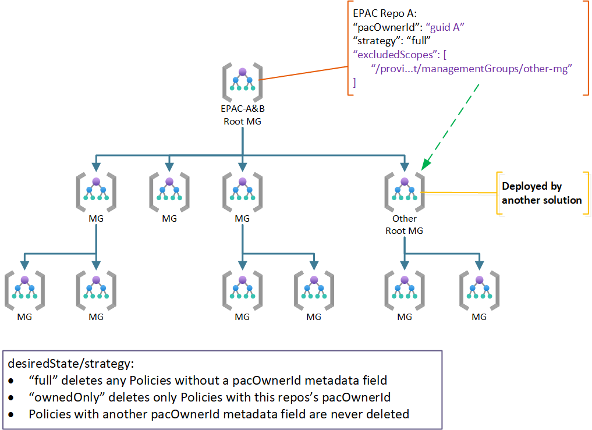

Desired State Management
Caution
EPAC is a true desired state deployment technology. It takes possession of all Policy Resources at the deploymentRootScope and its children. It will delete any Policy resources not defined in the EPAC repo.
Desired State strategy enables you to adjust the default behavior to fit more complex scenarios, including shared responsibility scenarios. The use cases below show the archetypical use cases. For complex scenarios it is possible to combine multiple use cases.
The desiredState Element
pacEnvironments must contain a desiredState element.
- Required:
strategy: The strategy to use for managing Policy resources. The following values are supported:full: EPAC manages all Policy resources in thedeploymentRootScopeand its children. EPAC deletes any Policy resources not defined in the EPAC repo.ownedOnly: EPAC manages only Policy resources defined in the EPAC repo. EPAC does not delete any Policy resources not defined in the EPAC repo.
-
keepDfcSecurityAssignments: It is recommended that Security and Compliance Initiatives are managed at management group levels with EPAC. Please read Managing Defender for Cloud Assignments. -
Optional:
excludedScopes: An array of scopes to exclude from management by EPAC. The default is an empty array. Wild cards are supported.excludedPolicyDefinitions: An array of Policy Definitions to exclude from management by EPAC. The default is an empty array. Wild cards are supported.excludedPolicySetDefinitions: An array of Policy Set Definitions to exclude from management by EPAC. The default is an empty array. Wild cards are supported.excludedPolicyAssignments: An array of Policy Assignments to exclude from management by EPAC. The default is an empty array. Wild cards are supported.doNotDisableDeprecatedPolicies: Automatically set deprecated policies' policy effect to "Disabled". This setting can be used to override that behavior by setting it totrue. Default isfalse.excludeSubscriptions: Exclude all subscription under the deployment root scope. Designed for environments containing many frequently updated subscriptions that are not requiring management and where usingexcludedScopeswould be impractical to maintain. If resource groups are addedexcludedScopesthey will be ignored as this setting will take precedence. It will not effect excluded management group scopes. Default isfalse
The following example shows the desiredState element with all properties set:
"desiredState": {
"strategy": "full",
"keepDfcSecurityAssignments": false,
"doNotDisableDeprecatedPolicies": false,
"excludedScopes": [],
"excludedPolicyDefinitions": [],
"excludedPolicySetDefinitions": [],
"excludedPolicyAssignments": []
}
Transitioning to EPAC
While transitioning to EPAC, existing Policy resources may need to be kept. Setting desiredState to ownedOnly allows EPAC to remove its own resources while preserving instances requiring (temporary) preservation.
"desiredState": {
"strategy": "ownedOnly",
"keepDfcSecurityAssignments": false
}
After short transitioning period (weeks), it is recommended to set desiredState to full to allow EPAC to manage all Policy resources.
"desiredState": {
"strategy": "full",
"keepDfcSecurityAssignments": false
}
Exclude Resource Groups
Warning
Breaking Change in v10.0.0: Policy Assignments at resource groups are managed by EPAC. The element includeResourceGroups has been deprecated and removed.
To exclude resource groups from management by EPAC, add an excludedScopes array element with a wild card for the subscription and resourceGroups to desiredState.
"desiredState": {
"excludedScopes": [
"/subscriptions/*/resourceGroups/*"
]
}
Use Case 1: Centralized Team
This original (previously the only) use case assumes one team/repo manages all Policies in a tenant or multiple tenants. Omit desiredState and inheritedDefinitionsScopes.
Use case 2: Manage Policy Definitions, Assignments, or Exemptions differently
In some organizations the lifecycle of different parts may be managed separately. For example, you may want to manage Definitions and Assignments separately from Exemptions.
Using Advanced CI/CD Pipelines (Recommended)
Advanced CI/CD Pipelines with Release Flow can be used to fast-track Exemptions while keeping a regular lifecycle for Definitions and Assignments. Script Build-DeploymentPlans has a parameter BuildExemptionsOnly to deploy only Exemptions.
Using separate Repos
In some organizations the lifecycle of different parts may be managed separately. For example, you may have one repo to manage Definitions and Assignments separately from Exemptions. Changing pacOwnerId is not effective.
EPAC only manages items with a directory in the Definitions folder. Therefore, you can use the same pacOwnerId from two repos and remove the folders to separate them. In this example:
- Repo1:
DefinitionscontainspolicyDefinitions,policySetDefinitionsandpolicyAssignmentsfolders. - Repo2:
DefinitionscontainspolicyExemptionsfolder.
Policy resource that would be defined in the folder. It is important to remove the folders. GitHub repos remove empty folder automatically.
If you have an empty folder or a folder with a file extension not recognized by EPAC, EPAC will delete any item which the folder could define from your environment.
Use Case 3: Multiple Teams with Shared Responsibility
In a shared responsibility model multiple teams manage the same tenant(s) at the same scope. Additionally, a variant of this use case is well suited to what previously was called brownfield which needs to preserve Policy resources deployed prior to EPAC. The following diagram shows two EPAC solutions managing the same root (tenant). Other Policy as Code solutions can also participate if the solution sets metadata.pacOwnerId.

For standard behavior where each repo manages, no additional entries in global-settings.jsonc are necessary since the default strategy full is the default. full deletes any Policy resources without a pacOwnerId; however, id does not delete Policy resources with a different pacOwnerId.
test
Use Case 4: Multiple Teams in a Hierarchical Organization
The hierarchical model allows a central team to manage the commonality while giving parts of the organization a capability to further restrict resources with Policies. This is a common scenario in multi-national corporations with additional jurisdictional requirements (e.g., data sovereignty, local regulations, ...).
This is managed identical to use case 3.
Caution
Previously, it was possible for a solution at a child scope to inherit Policy definitions form EPAC-A. This feature has been removed in v10.0.0 since it was not possible to manage the dependencies between Policy and Policy Set definitions and Policy Assignments correctly.
To replicate the previous functionality, copy/replicate the custom Policy and Policy Set definitions files from EPAC-A repo to EPAC-C repo.

Use Case 5: Exclude some Scopes and Policy Resources
In rare cases you may need to exclude individual child scopes, or Policy resources from management by an EPAC solution.
Child Scope not Managed and Not Subject to these Policies
Child scope is managed by some other means. The use of a EPAC development Management Group under the same root is such an example. Another example is a child scope managed by a different organization not subject to the root scope Policies.
You use globalNotScopes to exclude a child scope from management by EPAC. The following example excludes the childScope from management by EPAC. See also Global Settings
"globalNotScopes": {
"tenant": [
"/providers/Microsoft.Management/managementGroups/mg-policy-as-code"
]
},
Child Scopes not Managed by any EPAC repo but Subject to these Policies
This happens when EPAC strategy is full and some child scopes contain Policy resources not managed by an EPAC repo (delivered through some other deployment method). You can exclude them based on:
- Scopes (Management Groups, subscriptions and Resource Groups) through
desiredState.excludedScopes - Policy Definitions through
desiredState.excludedPolicyDefinitions - Policy Set Definitions through
desiredState.excludedPolicySetDefinitions - Policy Assignments through
desiredState.excludedPolicyAssignments
You can exclude any combination of excludedScopes, excludedPolicyDefinitions, excludedPolicySetDefinitions and excludedPolicyAssignments. Any of the strings can contain simple wild cards.
"desiredState": {
"strategy": "full",
"keepDfcSecurityAssignments": false,
"doNotDisableDeprecatedPolicies": false,
"excludedScopes": [ // Management Groups, Subscriptions, Resource Groups
"/providers/Microsoft.Management/managementGroups/mg-policy-as-code/childScope"
],
"excludedPolicyDefinitions": [
"/subscriptions/*/providers/Microsoft.Authorization/policyDefinitions/childScope-policy"
],
"excludedPolicySetDefinitions": [
"/providers/Microsoft.Management/managementGroups/mg-policy-as-code/providers/Microsoft.Authorization/policySetDefinitions/pattern-policy-set-*",
"/providers/Microsoft.Management/managementGroups/mg-policy-as-code/providers/Microsoft.Authorization/policySetDefinitions/one-of-policy-set"
],
"excludedPolicyAssignments": [
"/subscriptions/*/providers/Microsoft.Authorization/policyAssignments/my-*"
]
}
